Adressage, urbanisme, voirie, eau, défense incendie, cimetière : des obligations bien réelles. Voici, thème par thème, ce que la loi vous impose et comment nous le traduisons en plan, en carte ou en base de données exploitable.
La gestion d'une mairie demande une polyvalence exemplaire entre état civil, urbanisme, cimetière et voirie. Pour vous libérer des contraintes techniques, nous transformons vos données en documents prêts à l'emploi.
Nous produisons des livrables conformes aux attentes de la préfecture, du SDIS et de l'ANCT, sans que vous ayez à vous former à des outils SIG complexes. Chaque mission inclut les plans nécessaires, des données structurées et un accompagnement personnalisé pour vous garantir une prise en main immédiate et en toute confiance.
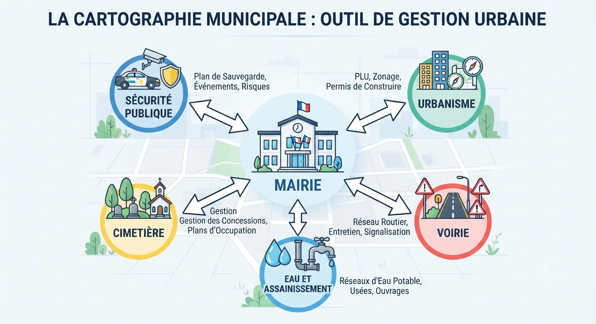
Le Plan Communal de Sauvegarde (PCS) et la gestion de la Défense Extérieure Contre l'Incendie (DECI) sont les piliers de votre capacité de réponse face aux imprévus. Nous vous aidons à structurer ces documents essentiels pour que vous puissiez agir avec sérénité et réactivité, tout en répondant pleinement aux exigences réglementaires qui incombent à la mairie.
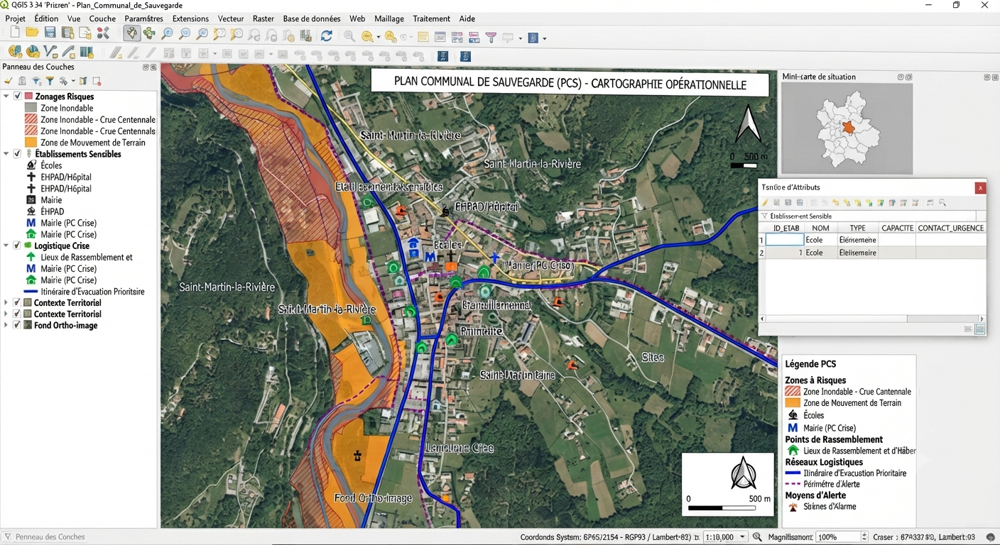
Cartes opérationnelles pour les secours : itinéraires d'évacuation, populations vulnérables, centres d'hébergement.
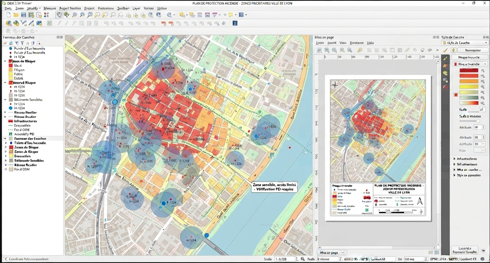
Géolocalisation et suivi de disponibilité de tous vos points d'eau incendie, transmis aux services de secours.
Deux obligations souvent sous-estimées, mais qui conditionnent directement les autorisations d'urbanisme et l'arrivée des secours.

Numérisation aux standards nationaux CNIG pour rendre votre PLU ou carte communale exécutoire et opposable.
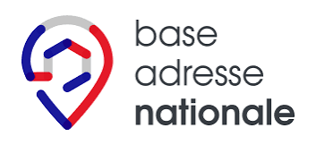
Répertoriage, nommage et géolocalisation de toutes vos voies et adresses pour alimenter la Base Adresse Nationale.
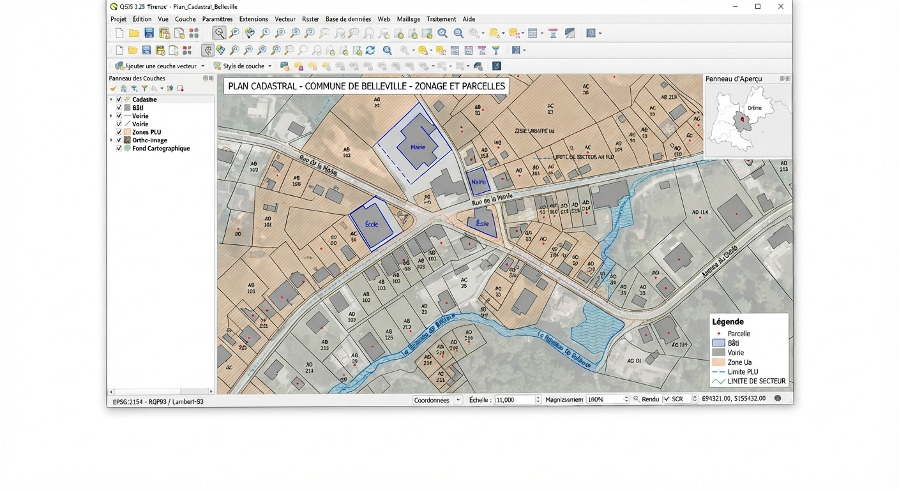
Gestion du domaine public/privé et mise à jour parcellaire continue, en lien avec la DGFIP.
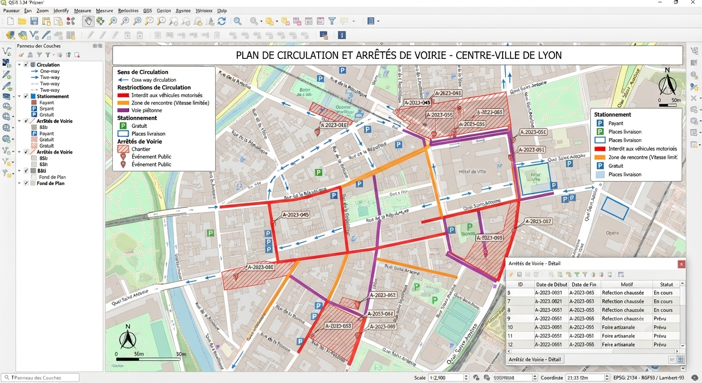
Cartographie de la réglementation du trafic, du stationnement et des limitations de tonnage.
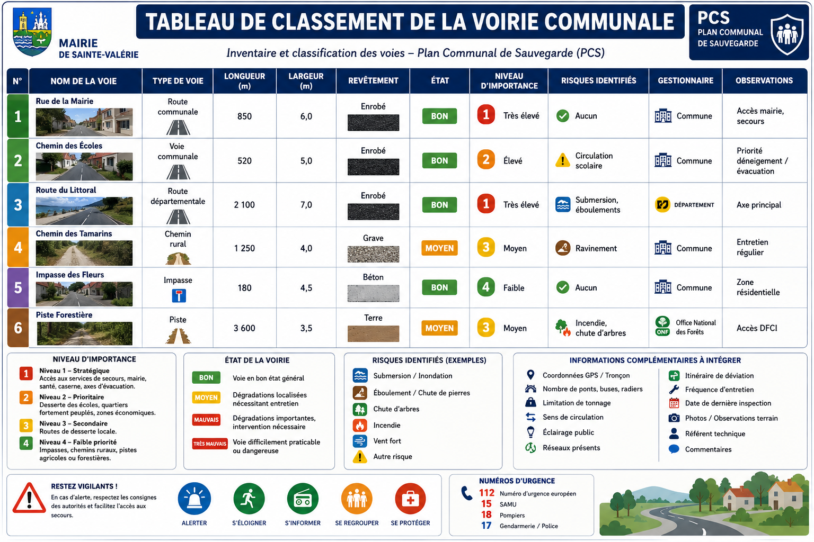
Statut juridique et tracé à jour des voies communales et chemins ruraux, indispensable en cas de vente ou d'aliénation.
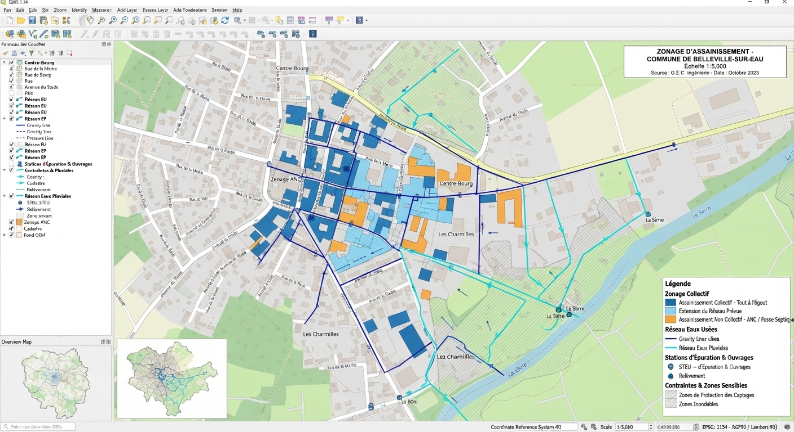
Délimitation des secteurs collectifs et non collectifs, et cartographie de gestion des eaux pluviales.
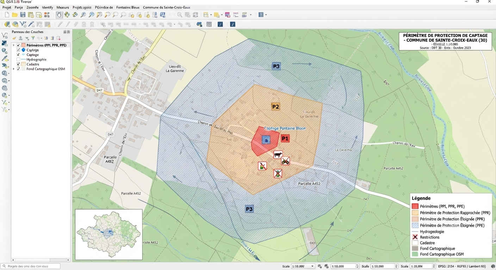
Délimitation de la Déclaration d'Utilité Publique autour de vos points de prélèvement d'eau potable.
Assurez une gestion apaisée et conforme de la police des funérailles
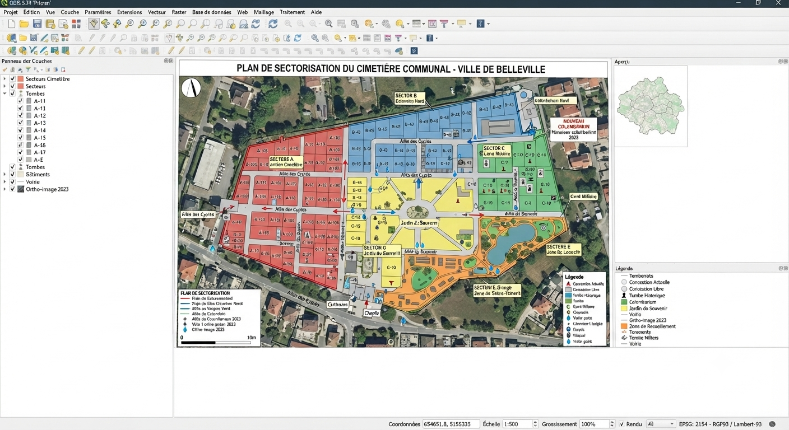
Plan centimétrique distinguant terrain commun, concessions payantes et espace cinéraire, conforme à l'organisation réglementaire du cimetière.
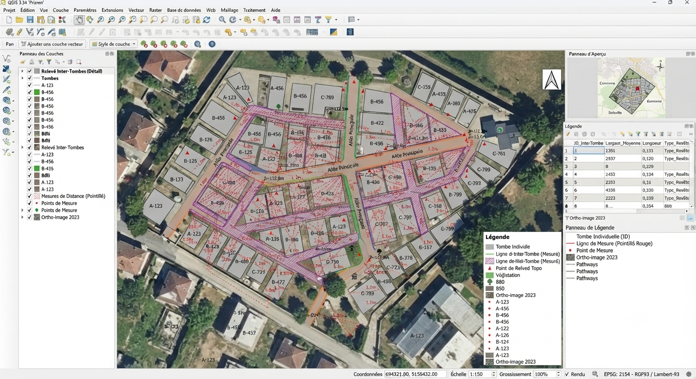
Vérification des distances légales (30 à 50 cm) entre fosses, garantie uniquement par un plan de très haute précision.
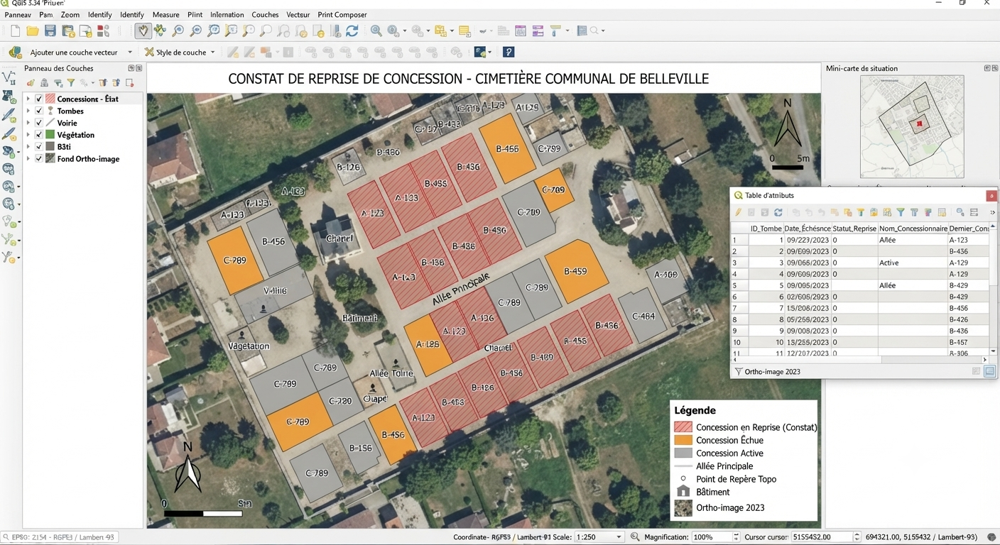
Identification graphique des sépultures en état d'abandon lors des constats officiels de la procédure de reprise.
Décrivez votre situation, nous vous indiquons ce qui est réellement urgent et ce qui peut attendre.